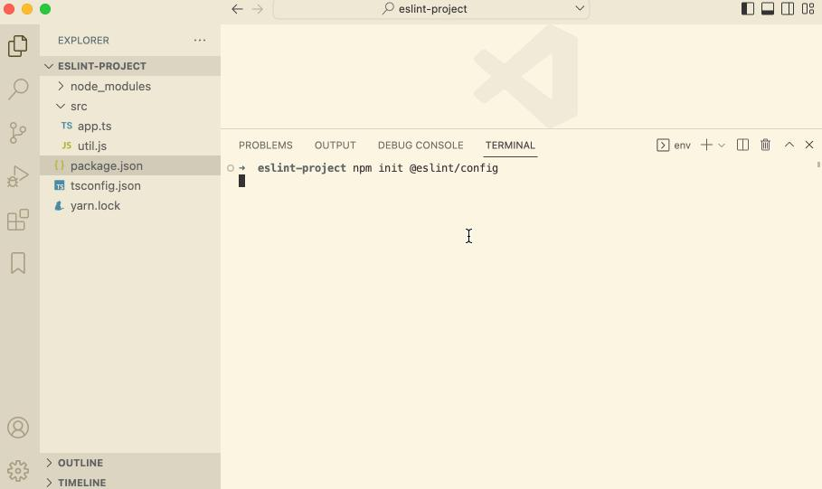
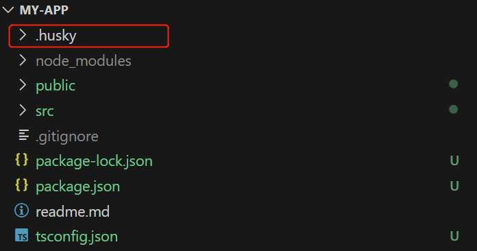
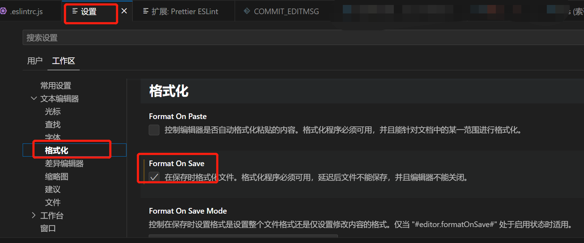
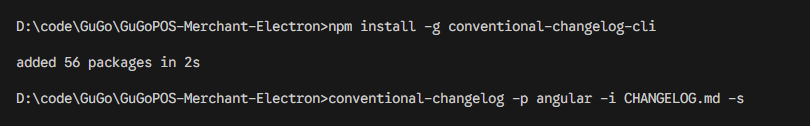
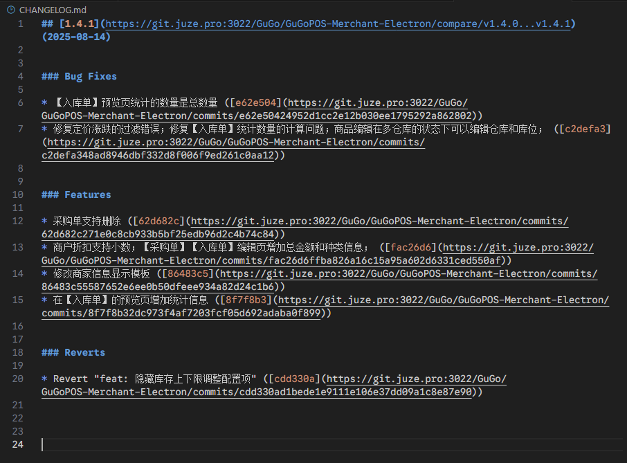

代码不规范，同事两行泪
- 可读性差
- 维护困难
- 变更历史不透明
- 自动化工具的不兼容
如何统一代码风格，规范提交呢呢？ 推荐使用 ESLint + Prettier + husky + lint-staged
大部分是以前写的东西，最新的使用方法要参考官方文档使用！！！
另外还有一些搭建项目时大概率会用到的一些东西。（未来得及做讲解，详细参考最新的官方文档）
- eslint (eslint) JavaScript 代码检测工具，检测并提示错误或警告信息
- prettier (prettier) 代码自动化格式化工具，更好的代码风格效果
- husky (husky) Git hooks 工具, 可以在执行 git 命令时，执行自定义的脚本程序
- lint-staged (lint-staged) 对暂存区 (git add) 文件执行脚本 检测 校验
- Commitizen (commitizen) 检测 git commit 内容是否符合定义的规范
- conventional-changelog (conventional-changelog)
- eslint-config-prettier (eslint-config-prettier) 解决 eslint 和 prettier 冲突
- 多环境管理(react-native-dotenv，react-native-config 等)dotenv
- 状态管理轻简化redux-toolkit
- 表单校验Yup，表单控件react-hook-form
- 自动收集国际化i18next-scanner, vscode 插件i18n Ally
- 屏幕适配方案size-matters
- 跨平台协作，环境变量设置cross-env
ESlint
eslint 是一个代码检测工具，用于检测代码中潜在的问题和错误，作用提高代码质量和规范。
安装步骤：
1、安装 eslint
npm install eslint
2、快速构建 eslint 配置文件
npm init @eslint/config
参考如下 gif 操作：

执行完成后，自动生成 eslint 配置文件.eslintrc.js 可在 .eslintrc.js 中配置 rules 定义校验规则
rules: {
indent: ['error', 4], // 用于指定代码缩进的方式，这里配置为使用四个空格进行缩进。
'linebreak-style': [0, 'error', 'windows'], // 用于指定换行符的风格，这里配置为使用 Windows 风格的换行符（\r\n）。
quotes: ['error', 'single'], // 用于指定字符串的引号风格，这里配置为使用单引号作为字符串的引号。
semi: ['error', 'always'], //用于指定是否需要在语句末尾添加分号，这里配置为必须始终添加分号。
'@typescript-eslint/no-explicit-any': ['off'] // 用于配置 TypeScript 中的 "any" 类型的使用规则，这里配置为关闭禁止显式使用 "any" 类型的检查。
}
husky：
husky 是一个 Git 钩子（Git hooks）工具，它可以让你在 Git 事件发生时执行脚本，进行代码格式化、测试等操作。
常见的钩子
pre-commit：在执行 Gitcommit命令之前触发，用于在提交代码前进行代码检查、格式化、测试等操作。commit-msg：在提交消息（commit message）被创建后，但提交操作尚未完成之前触发，用于校验提交消息的格式和内容。pre-push：在执行 Gitpush命令之前触发，用于在推送代码前进行额外检查、测试等操作。
具体的使用步骤如下：
安装
注意！官方文档更新了使用方式，请参考官方文档！
- 在项目根目录下运行以下命令安装 husky：
npm install husky --save-dev
- 启用 git 钩子 输入以下命令
npm pkg set scripts.prepare="husky install"
安装成功后会在 package.json 文件中 script 中生成命令
注意！如为自动生成需手动添加，将以下内容粘贴到 package.json 文件中
// package.json
{
"scripts": {
"prepare": "husky install"
}
}
- 创建
.husky目录，执行如下代码
npm run prepare
如图，执行成功后，项目中生成一个 .husky 目录

注意！如未生成 .husky 目录，推荐使用命令
npx husky install
创建 Git 挂钩
pre-commit
在 Git 提交之前做eslint 语法校验 。
1、创建钩子脚本文件
npx husky add .husky/pre-commit "npm test"
执执行成功，.husky 目录多出一个 pre-commit 文件
M.png)
注意！
window电脑输入后，可能会报错如下
Usage:
husky install [dir] (default: .husky)
husky uninstall
husky set|add <file> [cmd]
解决方式，删除 "npm test" 重新执行
npx husky add .husky/commit-msg
2、配置代码检测
git 提交前，执行 pre-commit 钩子脚本，进行校验代码语法、格式修复等操作。
1、打开 pre-commit 文件，内容如下：
#!/usr/bin/env sh
. "$(dirname -- "$0")/_/husky.sh"
2、下方代码添加到 pre-commit 文件中。lint-staged模块， 用于对 git 暂存区检测
npx --no-install lint-staged
npx --no-install lint-staged是一个命令，用于在不安装 lint-staged 的情况下运行该工具。npx --no-install命令用于从远程下载并执行指定的命令。
lint-staged
- 作用：lint-staged 可以让你在 Git 暂存（staged）区域中的文件上运行脚本，通常用于在提交前对代码进行格式化、静态检查等操作。
- 使用方式：你可以在项目中使用 lint-staged 配合 husky 钩子来执行针对暂存文件的脚本。具体的使用步骤如下：
在项目根目录下运行以下命令安装 lint-staged：
npm install lint-staged --save-dev
在 package.json 文件中添加以下配置：
{
"lint-staged": {
// src/**/*.{js,jsx,ts,tsx} 校验暂存区、指定目录下的文件类型
// 校验命令，执行 eslint 、prettier
"src/**/*.{js,jsx,ts,tsx}": ["prettier --write", "eslint --fix"]
}
}
"src/**/*.{js,jsx,ts,tsx}"是指定要针对的暂存文件模式，你可以根据自己的项目需求来配置。["prettier --write","eslint --fix"]为校验命令，可执行 eslint 、prettier 等规则
prettier
prettier 是一个代码格式化工具。prettier 与上述 husky 和 lint-staged 搭配使用，可以在提交代码之前自动格式化代码。具体的使用步骤如下：
在项目根目录下运行以下命令安装 prettier：
npm install prettier --save-dev
建 .prettierrc.js 文件，并定义你想要的代码样式，例如：
module.exports = {
semi: true, //强制在语句末尾使用分号。
trailingComma: "none", //不允许在多行结构的最后一个元素或属性后添加逗号。
singleQuote: true, //使用单引号而不是双引号来定义字符串。
printWidth: 120, //指定每行代码的最大字符宽度，超过这个宽度的代码将被换行
tabWidth: 4, //指定一个制表符（Tab）等于多少个空格。
};
这里的配置选项根据你的需求定义，具体选项可以参考 prettier 文档。 在 lint-staged 的配置中添加 "prettier --write"，例如：
{
"lint-staged": {
// src/**/*.{js,jsx,ts,tsx} 校验暂存区、指定目录下的文件类型
// 校验命令，执行 eslint 、prettier
"src/**/*.{js,jsx,ts,tsx}": ["prettier --write", "eslint --fix"]
}
}
这样当你进行 GIT 提交操作时，lint-staged 将自动运行 prettier 来格式化符合规则的文件。
配置 ctrl + s ，自动保存功能
第一种，在 vscode 设置里面配置 点击 Vscode 的设置=>工作区=>文本编辑器

安装步骤
Commitizen
是一个命令行工具，用于以一致的方式编写规范的提交消息。在使用 Commitizen 之前，你需要安装 Commitizen 及其适配器。
cz-conventional-changelog
是 Commitizen 的一个适配器，它实现了符合约定式提交（Conventional Commits）规范的提交消息。该规范定义了提交消息的格式和结构，并推荐了一些常用的提交类型和范围。
安装和使用步骤：
1、确保你的项目已经初始化并安装了 npm 或 yarn。 2、打开命令行终端，并在项目根目录下运行以下命令来安装 commitizen 和 cz-conventional-changelog：
使用 npm：
npm install --save-dev commitizen cz-conventional-changelog
使用 yarn：
yarn add --dev commitizen cz-conventional-changelog
3、安装完成后，在 package.json 中添加一个 config.commitizen 的字段，并设置它的值为 cz-conventional-changelog。 示例如下：
"config": {
"commitizen": {
"path": "cz-conventional-changelog"
}
}
在 package.json 中的 scripts 字段中添加一个 commit 的命令。 示例如下：
"scripts": {
"commit": "git-cz"
}
4、这将允许你使用 npm run commit 或 yarn commit 命令来进行交互式的提交。
现在，你可以使用 npm run commit 或 yarn commit 命令来进行提交。这将打开一个交互式的界面，引导你填写提交消息。
案例如下： 1、提交修改文件
git add .
2、开始交互式提交，填写规范信息
npm run commit
3、选择提交类型
? Select the type of change that you're committing: (Use arrow keys)
> feat: A new feature //新功能
fix: A bug fix //错误修复
docs: Documentation only changes //仅文档更改
style: [样式]Changes that do not affect the meaning of the code (white-space, formatting, missing semi-colons, etc)
refactor: [重构] A code change that neither fixes a bug nor adds a feature
perf: A code change that improves performance
test: Adding missing tests or correcting existing tests
4、根据提示填写内容，可选择空格跳过
? What is the scope of this change // 此更改的范围是什么
? Write a short, imperative tense description of the change//【必填】 简短的描述这个变化
? Provide a longer description of the change//提供变更的详细说明：
? Are there any breaking changes? //有什么突破性的变化吗？【y/n】
? Does this change affect any open issues? (y/N) //此更改是否会影响任何悬而未决的问题（是/否）
// 完成提交，输出打印日志：
[master 2cf55e0] docs: 修改commitzen文档
1 file changed, 2 insertions(+), 2 deletions(-)
当你完成提交消息后，Commitizen 会自动生成符合规范的提交消息，并将其添加到 Git commit 中。 根据 cz-conventional-changelog 的规范，提交消息需要包括类型（type）、范围（scope）、简短的描述（subject）和可选的详细描述（body）。
参考 https://blog.csdn.net/fightingLKP/article/details/126695679
commitlint
参考公认规范
- 作用：commitlint 用于校验 Git 提交信息的格式是否符合预定义的规范。
- 使用方式：你可以在项目中使用 commitlint 来规范提交信息的格式，例如使用约定式提交（Conventional Commits）的格式。具体的使用步骤如下：
在项目根目录下运行以下命令安装 commitlint：
npm install @commitlint/cli --save-dev
在项目根目录下创建 commitlint.config.js 文件，并添加以下配置：
module.exports = {
extends: ["@commitlint/config-conventional"],
};
这里使用了 @commitlint/config-conventional 包提供的预定义配置，可根据需要自定义配置。你还可以在配置文件中定义自己的规则。
在 package.json 文件中添加以下配置：
{
"scripts": {
"commitmsg": "commitlint -E HUSKY_GIT_PARAMS"
}
}
修改 husky 的配置，添加 "commit-msg" 钩子事件如下：
{
"husky": {
"hooks": {
"commit-msg": "npm run commitmsg",
"...": "..."
}
}
}
或者在.husky 文件夹下新建 commit-msg 文件写入npm run commitmsg（推荐）
这样当你进行提交信息时，commitlint 将自动校验提交信息的格式是否符合预定义规范，并给出相应的提示和错误。
根据 commit 内容自动生成 CHANGELOG，更新发版内容

